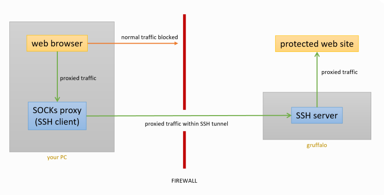
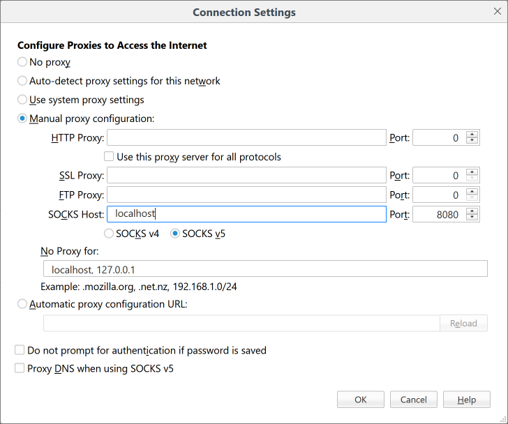

SSH SOCKS Proxies
Certain (usually sensitive) Crop Diversity HPC web pages are only available to you if you are connecting via a Supported Organisations network, and will block you from viewing them via a remote access connection.
You can work around this limitation by employing SSH’s ability to proxy your web traffic via gruffalo, thereby allowing you access to any protected pages

Creating a SOCKS proxy
This is very easy to do. Connect to gruffalo as per normal, but with the additional -D option:
$ ssh -D 8080 <username>@gruffalo.cropdiversity.ac.uk
This tells SSH to run a SOCKS proxy (https://en.wikipedia.org/wiki/SOCKS) listening on port 8080 (you can pick any unused local port number). Your web browser can then use this proxy to forward all its traffic over the encrypted SSH connection, via gruffalo, and onwards to its final destination.
Using a SOCKS proxy
Note
Different web browsers have different settings for their proxy options, but support for SOCKS proxies is universal. You may have to dig around to find them, but the settings you need will be in there somewhere.
Once you’ve found your browser’s Network/Proxy settings, you need to modify them as follows:
enable proxying
set the SOCKS host to
localhostset the SOCKS port to
8080(or whatever port number you selected)turn on DNS via the proxy
The example below shows this configuration in Firefox.

Once enabled, you can test it’s working by visiting https://www.whatsmyip.org/ - you want it list 143.234.80.231 (which is gruffalo's IP address) rather than your actual IP address.
You should now be able to access our protected web pages.
Important
Your web browser is now configured to proxy all traffic via gruffalo, which will work only while your SSH connection is active. You should disable proxy settings when access to protected web pages is not required and/or find a browser plugin that allows you to quickly toggle them on or off.